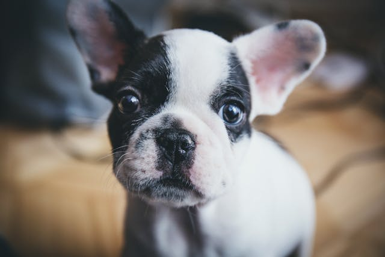
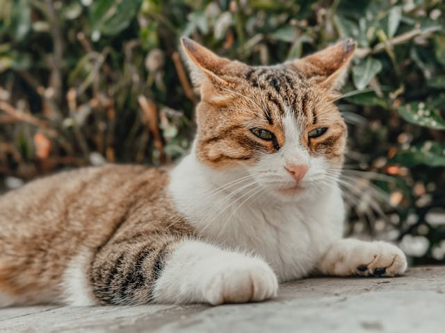

Tervetuloa Tassu adoptiopalveluun!
Tassu on eläinten adoptiopalvelu, jonka tavoitteena on auttaa kodittomia eläimiä löytämään turvallinen ja rakastava koti. Palvelu kokoaa yhteen adoptoitavat eläimet ja tarjoaa selkeää, luotettavaa tietoa adoptioprosessista. Sivuston avulla käyttäjä voi tutustua eri eläimiin, lukea heidän tarinoitaan ja ottaa helposti yhteyttä adoptiota koskevissa kysymyksissä. Tassu pyrkii tekemään adoptoinnista mahdollisimman helppoa ja läpinäkyvää sekä tukemaan sekä eläimiä että tulevia omistajia koko prosessin ajan

Mauri, 1 v
